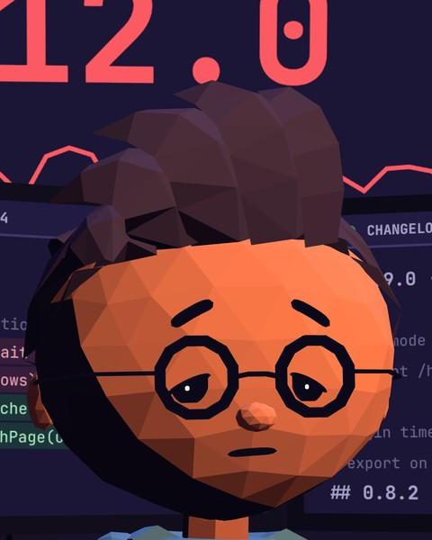
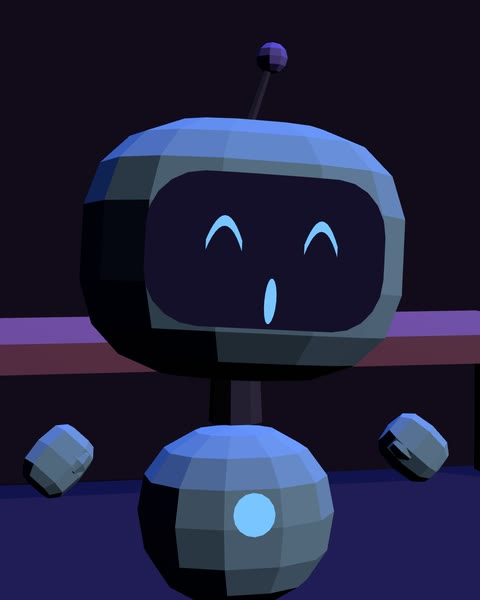
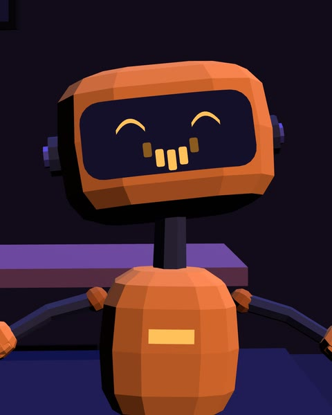

Scripts in.Episodes out.
FrameForge turns a short comedy script into a finished 9:16 animated reel: three original 3D characters, a voice for every line, music, sound effects and captions, rendered at 1080 × 1920.
Each row is one shot from the episode file: who speaks, the line, the title card, the camera move and the performance. Click a row to jump to that shot.
How an episode is made
An episode is one file. You direct it in the studio, one command voices and scores it, and the renderer draws every frame.
Write the script
Lines, speakers and title cards live in the episode file. Start from an episode or duplicate shots in the studio.
"dialogue": "Ship it."Direct every shot
Pick each character's action and emotion, the camera move and a dutch angle. The monitor shows the exact frame you'll export.
"framing": { "move": "push", "roll": 7 }Voice and score
Every line is voiced separately, and its length sets the shot's length. Music ducks under speech, and the mix lands at the reel loudness standard.
−14 LUFS · voices · music · effectsRender the reel
Every frame is drawn at its exact time and encoded with the mixed audio, ready for Reels, Shorts and TikTok.
1080 × 1920 · 30 fps · H.264
The cast
Three original characters with fixed looks and voices, so every episode feels like the same show.

DEV
The developer. Only ever wants one tiny change.
voice · am_michael
BLUE
The eager assistant. Says yes to everything.
voice · af_heart
ORANGE
The deadpan assistant. Technically correct, every time.
voice · bm_georgeQuestions
Do I need to write code?
Not to direct. The studio edits titles, lines, performances and cameras in your browser. When you change a line, one command on your computer re-voices and re-times the episode, and the studio tells you when that's needed.
Is this made with AI?
The voices come from Kokoro, an open-source voice model that runs on your own computer. The animation, camera work, music and sound effects are generated by code. No cloud AI service is used.
What do I get?
An MP4 at 1080 × 1920 and 30 fps with voices, music, sound effects and burned-in captions, ready to post as a Reel, Short or TikTok.
Can I make my own episode?
Yes. Episode 02, Dark Mode, was written entirely as an episode file, with no changes to the studio's code.
Which languages are supported?
English today. Telugu and Hindi are planned.